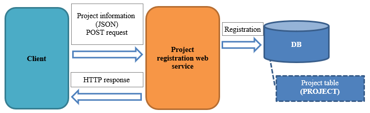

3.2.3.1. Creation of a Registration Function¶
This section describes the function for registering the requested information (in Json format) to the DB.
- Overview of the function to be created
- 
- Communication confirmation procedure
Check the DB status in advance
Execute the following SQL from the console of H2 and confirm that the record does not exist.
SELECT * FROM PROJECT WHERE PROJECT_NAME = 'Project 999';
Registration of project information
Use any REST client to send the following request.
- URL
- http://localhost:9080/ProjectSaveAction
- HTTP method
- POST
- HTTP header
- Content-Type: application/json
X-Message-Id: 1 - Request body
{ "projectName": "Project 999", "projectType": "development", "projectClass": "ss", "projectManager": "Yamada", "projectLeader": "Tanaka", "clientId": 10, "projectStartDate": "20160101", "projectEndDate": "20161231", "note": "Remarks 999", "sales": 10000, "costOfGoodsSold": 20000, "sga": 30000, "allocationOfCorpExpenses": 40000 }
- Communication confirmation
Execute the following SQL from the console of H2 and confirm that one record can be retrieved.
SELECT * FROM PROJECT WHERE PROJECT_NAME = 'Project 999';
3.2.3.1.1. Register¶
- Create a format file
HTTP messaging analyzes the requested HTTP message using the General Data Format .
- ProjectSaveAction_RECEIVE.fmt
file-type: "JSON" text-encoding: "UTF-8" [project] 1 projectName N 2 projectType N 3 projectClass N 4 projectStartDate[0..1] N 5 projectEndDate[0..1] N 6 clientId X9 7 projectManager[0..1] N 8 projectLeader[0..1] N 9 note[0..1] N 10 sales[0..1] X9 11 costOfGoodsSold[0..1] X9 12 sga[0..1] X9 13 allocationOfCorpExpenses[0..1] X9 14 userId[0..1] X9
- Key points of this implementation
- Name of the format file as “Request ID + “_RECEIVE””.
- For information on how to write the format file, see Description Rules for Format Definition File .
- Create a form
Create a form to bind the contents of the request body.
- ProjectForm.java
public class ProjectForm { // Excerpt of some items only /** Project name */ @Required @Domain("projectName") private String projectName; /** * Acquire the project name. * * @return Project name */ public String getProjectName() { return projectName; } /** * Set the project name. * * @param projectName Project name to be set * */ public void setProjectName(String projectName) { this.projectName = projectName; } }
- Key points of this implementation
- To perform validation using Bean Validation , set the annotations for validation.
- Create a business action
Create a business action to register the project to the DB.
- ProjectSaveAction.java
public class ProjectSaveAction extends MessagingAction { /** * Business process to be executed when a message is received. * <p> * Validate the project information and register it to DB. * This method is used to register a single project. * (Form is checked in general format to ensure that it is a single project) * </p> * When registration is complete, a response message with the response code is set. * If an exception is thrown, the response message is set in {@link ProjectSaveAction#onError(Throwable, RequestMessage, ExecutionContext)} *. * * @param requestMessage Received message * @param executionContext Execution context * @return Response message */ @Override protected ResponseMessage onReceive(RequestMessage requestMessage, ExecutionContext executionContext) { // Bind input values to a form ProjectForm form = BeanUtil.createAndCopy(ProjectForm.class, requestMessage.getParamMap()); // Throw a business exception when there is a validation error ValidatorUtil.validate(form); UniversalDao.insert(BeanUtil.createAndCopy(Project.class, form)); // Create a formatter for the response message requestMessage.setFormatterOfReply(createFormatter()); // Sets the status code to be described in the response message Map<String, String> map = new HashMap<>(); map.put("statusCode", String.valueOf(HttpResponse.Status.CREATED.getStatusCode())); // Returns response data return requestMessage.reply() .setStatusCodeHeader(String.valueOf(HttpResponse.Status.CREATED.getStatusCode())) .addRecord("data", map); } }
- Key points of this implementation
- Inherits MessagingAction and creates a business method.
- The process to be executed when a request is received is implemented in MessagingAction#onReceive.
- The value of the request body is held by object RequestMessage in the state parsed using the General Data Format. Acquire the value of the request body using the getParamMap method.
- Bean Validation is used to validate the request value.
- UniversalDao is used to register the project to the DB.
- The response code representing the processing result is set in ResponseMessage and returned.
Tip
When a business exception is thrown, the response code “400” is set by processing HTTP Messaging Error Control Handler .